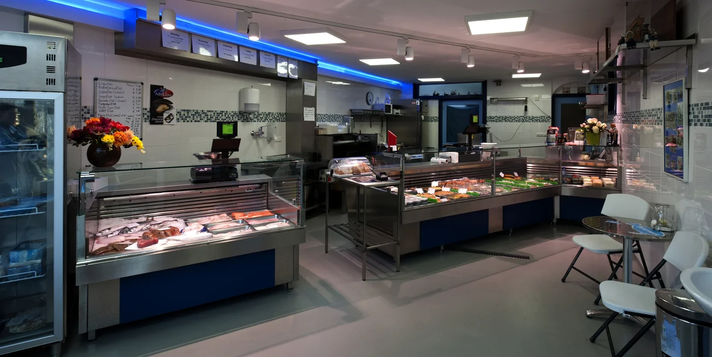
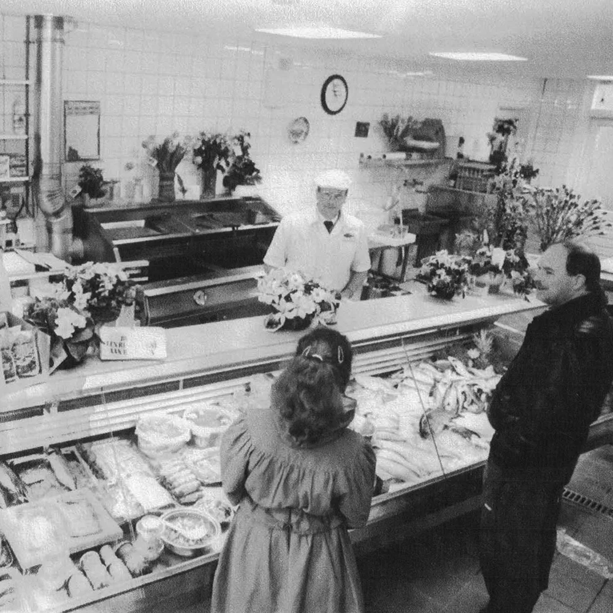

Verse vis, recht van de kade
Elke ochtend halen wij onze vis in Scheveningen, maken 'm zelf schoon en verkopen 'm dezelfde dag vers in onze winkel aan de Buitenwatersloot.

Dagvers uit Scheveningen
Iedere ochtend vroeg halen wij onze vis rechtstreeks op, voor de hoogst mogelijke versheid.
Eigen visverwerking
Wij maken alle vis zelf schoon in de winkel, dezelfde ochtend nog.
Familietraditie sinds 1923
De naam Van Oosten staat al generaties lang garant voor verse Noordzeevis in Delft.

“Van een handkar met haring in 1923 tot een vertrouwde winkel aan de Buitenwatersloot.”
Wat begon met opa Cornelis van Oosten en zijn handkar vol haring, groeide uit tot een echte Delftse vishandel. Sinds 1957 zit de zaak aan de Buitenwatersloot, en sinds 2015 staat de derde generatie, Wijnand van Oosten jr., weer volledig aan het roer.
Lees onze geschiedenisAlles voor de echte visliefhebber
Van dagverse Noordzeevis tot gerookte specialiteiten en kant-en-klare gerechten.
Verse Noordzeevis
Dagelijks vers binnengehaald in Scheveningen en in onze eigen winkel schoongemaakt.
Gerookte specialiteiten
Zoals warm gerookte makreel, wisselend met het seizoen.
Kant-en-klaar & bijproducten
Gebakken vis in duurzame verpakking en handige bijproducten.
Vis bestellen
Twee dagen van tevoren doorgeven, rustig ophalen in de winkel.
Kom langs of bel voor uw bestelling
Buitenwatersloot 43 in Delft, of geef uw bestelling telefonisch of per mail door.